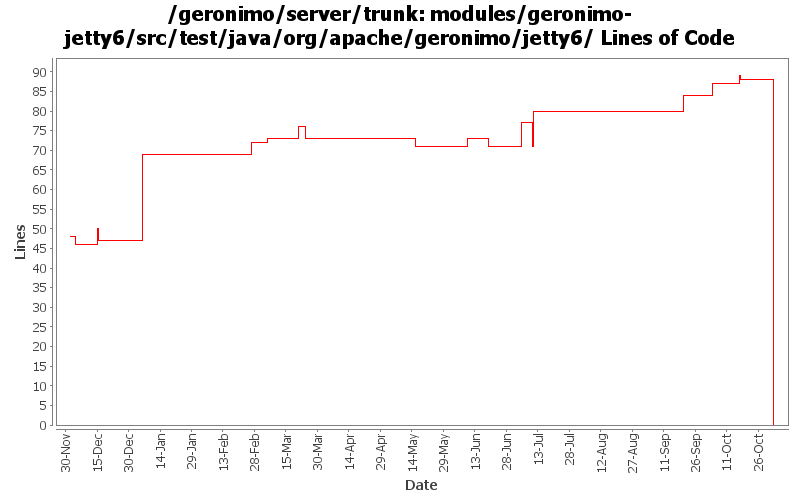

[root]/modules/geronimo-jetty6/src/test/java/org/apache/geronimo/jetty6
 app
(0 files, 0 lines)
app
(0 files, 0 lines)
 connector
(0 files, 0 lines)
connector
(0 files, 0 lines)

| Author | Changes | Lines of Code | Lines per Change |
|---|---|---|---|
| Totals | 47 (100.0%) | 140 (100.0%) | 2.9 |
| djencks | 15 (31.9%) | 57 (40.7%) | 3.8 |
| gdamour | 4 (8.5%) | 43 (30.7%) | 10.7 |
| kevan | 11 (23.4%) | 13 (9.3%) | 1.1 |
| akulshreshtha | 4 (8.5%) | 12 (8.6%) | 3.0 |
| vamsic007 | 2 (4.3%) | 6 (4.3%) | 3.0 |
| gregw | 1 (2.1%) | 6 (4.3%) | 6.0 |
| dims | 2 (4.3%) | 3 (2.1%) | 1.5 |
| prasad | 7 (14.9%) | 0 (0.0%) | 0.0 |
| jbohn | 1 (2.1%) | 0 (0.0%) | 0.0 |
GERONIMO-3565. Modules distributed amongst framework/modules and plugins
0 lines of code changed in 7 files:
GERONIMO-3490 make JettyContainer and WebManagerPortlet utilize the LazyStatisticsProvider interface introduced in rev. 585308. Also updated to use setStartTime() and setLastSampleTime() from StatsImpl.
0 lines of code changed in 1 file:
GERONIMO-3490 Adding LazyStatisticsProvider interface to deal with components that provide
statistics on demand.
5 lines of code changed in 1 file:
GERONIMO-3490 Adding JSR77 stats for Jetty connectors. This a substantially modified version
of the patch submitted by Viet H. N.
4 lines of code changed in 2 files:
GERONIMO-2964 Cannot specify the Tomcat work directory for a web application
o Committing GERONIMO-2964-trunk.patch submitted in the JIRA
o geronimo-web.xml can now have a "work-dir" tag to specify the work directory to be used by the application.
o For Tomcat this work directory will be relative to "catalina.home"
o For Jetty this work directory will be relative to jetty home which is var/jetty by default.
6 lines of code changed in 2 files:
* Add a Cluster GBean such that we can implement cluster aware services, for
instance a cluster aware deployer;
* When a clustered Web-application is deployed, we now deploy it to a Cluster
by specifying its name. The former mechanism was to deploy it to a
DispatcherHolder;
* Add Node.getJMXConnector such that clients can get a JMXConnector connected
to the target Node instance. Host and port connection details of this
JMXConnector are retrieved via the clustered service proxying/invocation of
WADI; and
* Use a configuration substitution mechanism to simplify the configuration of
node names.
11 lines of code changed in 1 file:
GERONIMO-3303 Major simplification of authentication framework. Removes remote login and supporting code
9 lines of code changed in 1 file:
Add SessionManager.getRemoteNodes so that clients know which Nodes are hosting the sessions managed by a clustered
SessionManager.
Provide a WADI implementation of this contract.
6 lines of code changed in 1 file:
GERONIMO-3083 fix j2ca container managed security
1 lines of code changed in 1 file:
GERONIMO-2687. Don't construct default and run-as subjects, get them from a login module. Also creates a separate server-security-config for the security config stuff you probably want to change. Also fixes lots of security problems, including mdb run-as handling.
28 lines of code changed in 2 files:
GERONIMO-3034 GERONIMO-2655 New SelectChannel and AJP connectors. Also hook the connectors up to our thread pool
3 lines of code changed in 1 file:
GERONIMO-3154 Implement security for jetty using only spec compliant jacc calls
3 lines of code changed in 2 files:
GERONIMO-2965 GERONIMO-3008 GERONIMO-3010 Tomcat annotation processing with lots of other improvements. Uses LifecycleProvider interface proposed in GERONIMO-3010
2 lines of code changed in 1 file:
GERONIMO-2949 get the jndi handler outside the context handler: GERONIMO-3000 provide default locale encoding mappings and mimetype mappings: this should fix 2999 for jetty, but I don't know how to test
3 lines of code changed in 1 file:
GERONIMO-2940, GERONIMO-2887 More injection work for app client and jetty: lifecycle methods verified on app client. Ear lib dir available to app client. Also upgrade to jetty snapshot for jetty lifecycle method support
1 lines of code changed in 1 file:
GERONIMO-2887 put the injections and postCreate and preDestroy info in one object
2 lines of code changed in 1 file:
GERONIMO-2907 Remove dependency on mx4j
3 lines of code changed in 1 file:
GERONIMO-2887 Start hooking up injection for jetty
3 lines of code changed in 1 file:
Fix build following recent Jetty6 AbstractSessionManager updates.
There are two core changes:
1. update ClusteredSessionHandler to leverage the new API provided
by AbstractSessionManager, which simplifies the implementation and
remove a hack around the initialization of the session attributes
following a session migration.
2. move pre-handle logic from ServletHandler to SessionHandler.
Also, fix a lame type in WADIClusteredPreHandlerFactory: the
expose interface is PreHandlerFactory and not SessionHandlerFactory.
This fixes GERONIMO-2677 - HttpSession Relocation - Sticky load-balancing via HTTP Cookie
26 lines of code changed in 2 files:
fix build failures on winxp, now jetty is sending back 404, added a sleep to prevent JVM_Bind exception
3 lines of code changed in 2 files:
temp change to expect 500 until next version of Jetty: GERONIMO-2654
6 lines of code changed in 1 file:
GERONIMO-2654 make the ContextHandlerCollection work, although a couple tests fail. Both welcome and console apps work for me
2 lines of code changed in 1 file:
GERONIMO-2537 Fix notices and src headers in recent jee5 updates. Update Web Console notice.txt w/ ibm donation information, add copyright to assembly notice files, and remove ASF v 1.1 license from source borrowed from xerces project
13 lines of code changed in 11 files:
GERONIMO-2616 Copy jee5 work from sandbox, make it build in normal build
0 lines of code changed in 2 files: